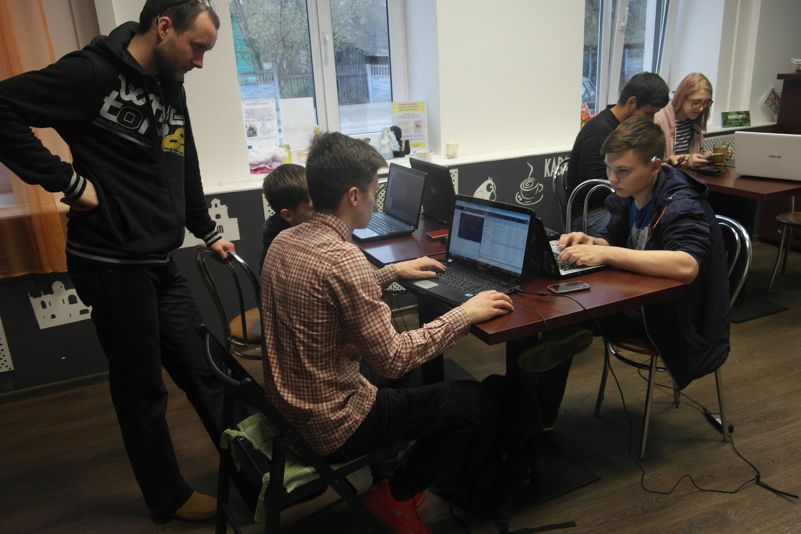

Компьютер всегда казался мне волшебством, а программисты — волшебниками. В процессобнаружилось интересное сходство программирования и сочинения музыки. Сейчас воспринимаю программирование как продолжение моей музыкальной профессии.